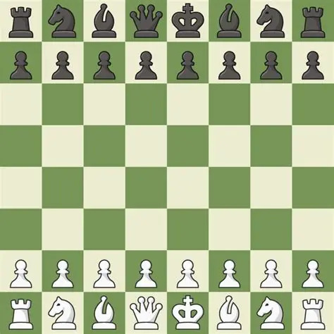

Le jeu d'échec est un jeu ancestral qui tire ses origines de l'Inde. Inventé vers le III siècle. C'est un jeu de stratégie qui se joue au tour par tour, sur un plateau de 64 cases. Le but du jeu est de capturer le roi adverse. Bien que ce jeu peut sembler facile aux premiers abords, les nombreuses pièces et choix possibles rendent la partie bien plus complexe. Il existe plus de positions différentes que d'atomes dans l'univers.
Champion du monde de 1985 à 2000, considéré comme l'un des plus grands joueurs de l'histoire.
Champion du monde 1972, génie américain légendaire dont le style reste une référence absolue.
Champion du monde de 2013 à 2023, il détient le record du plus haut classement Elo jamais atteint.
Champion du monde de 1975 à 1985, maître de la stratégie positionnelle et de l'endgame.
Moins de 3 minutes par joueur. Jeu ultra-rapide, idéal pour s'entraîner aux réflexes.
3 à 5 minutes par joueur. Format populaire en compétition, équilibre vitesse et réflexion.
10 à 60 minutes par joueur. Permet une réflexion plus approfondie tout en restant dynamique.
Plus de 60 minutes par joueur. Cadence des tournois officiels FIDE, pour les parties sérieuses.
Se déplace en ligne droite, horizontalement ou verticalement, sur autant de cases que souhaité.
Se déplace en diagonale sur autant de cases que souhaité. Reste toujours sur la même couleur.
Se déplace en L : 2 cases dans une direction puis 1 case perpendiculairement. Peut sauter par-dessus les pièces.
Pièce la plus puissante : combine les mouvements de la tour et du fou. Se déplace dans toutes les directions.
Se déplace d'une seule case dans n'importe quelle direction. Pièce à protéger absolument !
Avance d'une case (ou deux au premier coup). Capture en diagonale. Peut se promouvoir en atteignant le bout du plateau.
Placez vos pions et pièces sur les cases centrales (e4, e5, d4, d5) dès l'ouverture.
Sortez vos cavaliers et fous rapidement avant de roquer pour mettre votre roi en sécurité.
Avant chaque coup, demandez-vous : "Que menace mon adversaire ? Quel est mon meilleur coup ?"
Chaque pièce a une valeur. Évitez les échanges désavantageux sauf si vous avez une compensation claire.
Après chaque partie, relisez vos coups pour comprendre vos erreurs et progresser durablement.